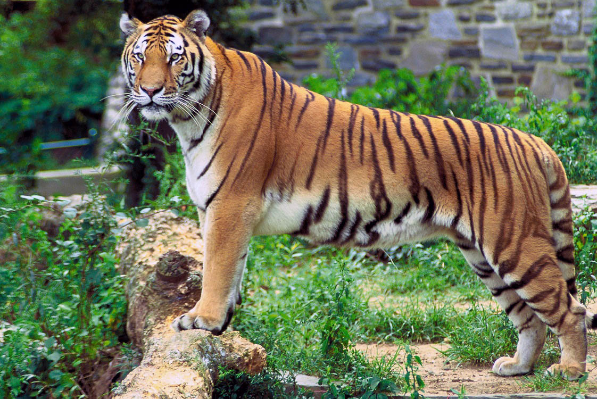

Le tigre

Caractéristiques Physiques
Le tigre est impressionnant par sa taille, les mâles mesurant entre 2,7 et 3,1 mètres de longueur, y compris la queue, et pesant généralement entre 180 et 260 kg.
Les femelles, plus petites, mesurent entre 2,4 et 2,6 mètres de longueur et pèsent entre 100 et 160 kg.
Leur pelage distinctif, orange avec des rayures noires, varie selon chaque individu, ce qui permet de les identifier de manière unique.
Habitat et Répartition
Ce tigre majestueux préfère les forêts tropicales et subtropicales, les mangroves des Sundarbans, les prairies et les forêts marécageuses. Son territoire est vaste, couvrant des régions protégées telles que les parcs nationaux de Ranthambore, de Jim Corbett et de Sundarbans, où ils trouvent une abondance de proies et des conditions favorables à leur survie.
Comportement et Mode de Vie
Les tigres du Bengale sont des animaux solitaires et territoriaux, chaque individu marquant son territoire avec de l'urine, des sécrétions glandulaires et des griffures sur les arbres. Ils sont principalement nocturnes, chassant des ongulés comme les cerfs axis, les sambars, et les sangliers. Leur méthode de chasse repose sur l'embuscade, utilisant leur camouflage pour se rapprocher de leurs proies avant de lancer une attaque rapide et puissante.